自由循环1.86，9月30日更，职业列表新增职业图标
置顶：
若你使用的是 Windows 10 1803–20H2（版本低于 20348），在wgc模式下，黄色边框是系统强制显示的，无法移除，这是微软为防止恶意录屏设计的视觉提示，可升级最新win10 21h2或者win11版本解决。
如果wgc无法使用，可安装网盘的vc+库安装包，然后切换为dxgi模式。
自由循环1.86更新
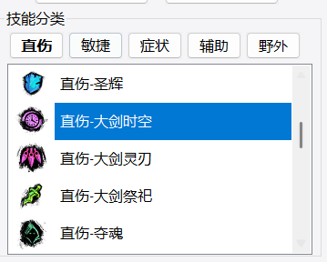
1，职业列表新增职业图标设置，代替原有的圆点方案。
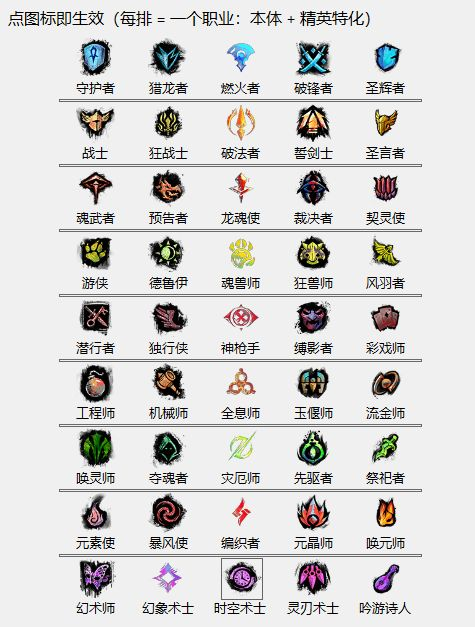
双击修改职业配置图标，旧版圆点方案仍做保留。
2，去掉了其他设置中的调试模式，现改为f9内通过按钮的形式进行颜色对比，通过f9ui中的颜色测试按钮，点击后可查看技能颜色与屏幕颜色的差异。
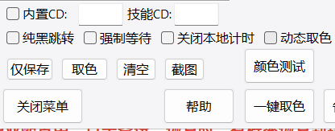
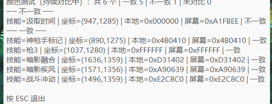
方便排查颜色情况。
自由循环1.851更新
1，修复了纯黑跳转有概率出现连点，无法跳出的bug，会导致某1按键连续触发。
2，修复了职业配置中，点击备份、恢复时，有概率恢复到错误配置文件中。
自由循环1.85更新
1.84b暂时撤回，部分新功能等后续完善后更新。
1，本次修复了技能计时判断的问题，在默认循环中，当技能施法后会在本地文件中生成一个计时，但是会导致部分多重计时判断出现错误。
例如，技能1>2000=技能2，技能2>5000=技能3，本质是希望技能2>5000后才释放技能3，但是实际因为读取了本地计时，技能2>5000这个条件，会在启停循环后，错误释放出去，没有按照实时的前置条件施法。
本次修复后，在f9内增加了一个开关，例如，技能2>5000=技能3的前置条件是技能2的计时，那么选择技能2，然后关闭本地计时，这样这个技能2，就不会读取本地时间了，后续判断会按照游戏实时施法进行。
自由循环1.83b更新
1，重写挂机模式，现支持后台挂机，并支持识图功能，不再是以前的纯按键，可根据游戏技能颜色变动而执行对应按键，与前台逻辑完全一致，方便挂机，支持起手，主循环里的计时，切武器等条件，不支持独立循环里的技能。
2，处于挂机模式时，将在屏幕中心顶部显示一个挂字，期间可操作其他窗口，不影响后台判断。
3，挂机模式只支持dxgi，wgc模式，gdip无法使用。
4，本版本为测试版，仅在挂机上做了调整，后续会尝试优化。
自由循环1.82更新
1，由于近期dps插件api接口更换，部分参数名称修改，导致1.82之前的版本无法使用最新dps插件获取技能延迟等信息，本次更新后，需同步更新dps日志到最新版，并替换arcdps_SkillCastTimer.dll
2，在f10菜单中，增加供给官菜单，方便部分传奇制作。
自由循环1.81更新
1，修改循环新增编辑模式，与非编辑模式
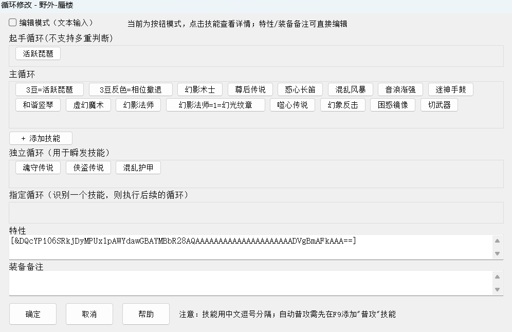
勾选左上角的编辑模式，依然为原版一样的，可以手动输入技能，修改循环信息。
如果不勾选该模式，循环信息将显示为按钮模式，点击按钮后，会快捷弹出该技能的f9列表信息，无需手动呼出f9，可快速修改单一技能的相关参数。
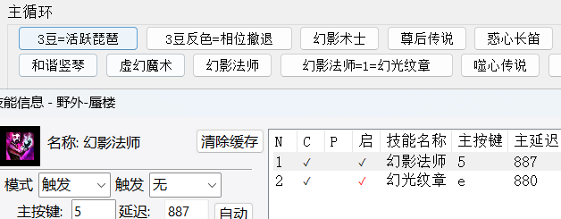
如果该按钮包含多重条件，也支持一并修改，列表内只会显示你点击的技能信息，不会显示其他技能信息。
2，修复了在编辑模式下，手动在主循环输入信息后，点击添加技能按钮，获取信息时会清空掉之前输入的信息。
3，修复了在修改循环页面中，点击sc数据时，无法导入信息到主循环的问题。
历史更新
自由循环1.793更新
new.最新更新，优化了起手截图逻辑，停止循环后，保留暂停机制，防止截图组件被重置。确保后续二次启动成功截图，防止因为截图数据丢失，导致后续启动循环有概率丢失技能判断。
1. UI全面大改，缩小体积，整合部分功能，具体可自行查看。
2.诊断模式修改，目前开启诊断模式后，可生成对应日志，用于排查相关取色问题，日志内容，包括当前识别的技能，实际颜色，本地颜色，是否触发，触发后按了哪些按键，该模式下每个技能之间固定1秒延迟。
例如：
[11:47:32.313][DETECT] 识别 | 技能=碎裂重锤 | 模式=单点取色 | 坐标=(1102,1358) | 屏幕色=0x000000 | 配置色=0xAE885E | 模糊=
[11:47:32.324][DETECT] 对比 | 技能=碎裂重锤 | 结果=未命中 | 动作=跳过
[11:47:31.044][DETECT] 识别 | 技能=扯裂 | 模式=单点取色 | 坐标=(1041,1375) | 屏幕色=0xC6B7AC | 配置色=0xC6B7AC | 模糊=
[11:47:31.057][DETECT] 对比 | 技能=扯裂 | 结果=命中 | 动作=准备触发
[11:47:31.072][EXEC] 触发 | 技能=扯裂 | 主延迟=1000ms, 跟随1=ms, 跟随2=ms, 跟随3=ms | 点击模式= | 按键模式=触发 | 连点=0 | 颜色=0xC6B7AC
[11:47:31.084][EXEC] 执行 | 阶段=主循环 | 技能=扯裂 | 按键=3 | 延迟=1000ms | 次数=2
该模式主要用于识别方面的排查，与日志模式不同，该模式会实时记录当前屏幕颜色与本地颜色的色值。
3.优化了f9中，技能启用、禁用部分判断，可能解决1.6以前旧版配置，可能会无法正确判断的问题。
4.删除了动态截图方案，优化了现有截图方案。
5.修复了在开启范围找色的情况下，如果点击了截图，点击仅保存后，范围找色开关无法取消的问题。
6.在f9双击技能后，弹出二级菜单，提示用户是否开启、禁用当前技能，防止出现误关闭，却无法发现，认为是循环错误的问题。
7.修复了一个颜色检测逻辑bug，旧版中 当触发技能后，会有一个内置的颜色判断，在早期版本用来避免龙魂光环类技能误触，后续由于奶燃职业需要获取2豆，实际上2豆颜色没有变化，导致判断错误，本次更新优化了下判断方式，奶燃与龙魂光环均可正常判断。
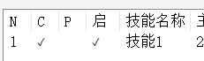
1.F9中新增技能开关，关闭后，循环中将会跳过该技能的判断
例如，技能1 关闭，技能1，技能1=技能2，技能3>1000=技能2，技能1=1=技能2，技能1>>1000=技能2，所有包含技能1的条件都不会触发。
2.F10中，新增一个新分类，敏捷，可分配配置文件到该分类下。
3.修复了范围取色勾选后，如果坐标信息为空，会出现无法识别颜色，报错的问题。
4.优化了技能最低延迟，使用连点，连续点击，如果技能延迟过低，可能会触发游戏网络中断，现在技能低于100毫秒，如果开启连点，将减少连点次数，防止断线。
历史更新
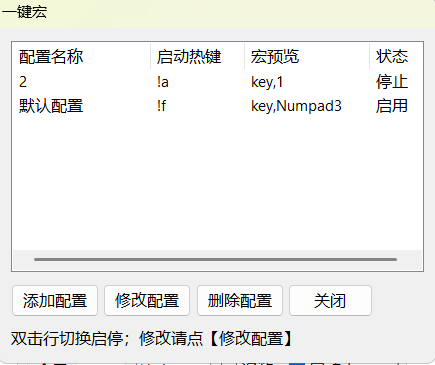
1.一键宏新增多项配置，可自定义单独启动热键。
2.修复了鼠标模式为其他，使用alt+组合键，会误触ctrl的问题。
3.修复了驱动模式在，部分一键宏无法触发第一个按键的问题。
历史更新
1.优化了 连点模式下的判断，旧版会导致部分按键错误，例如获取奶然某个书页的颜色，而非技能本身的颜色，使用了跟随按键触发，会导致出现没有能正确触发跟随按键的问题。
2.修复了如果技能按键延迟间隔时间太短，现在技能最少延迟内置限制在10毫秒，低于10毫秒会导致部分技能触发激战2游戏内置的连点判定，造成网络中断。
3.优化了自动按钮获取技能延迟的体验，现在通过自动按钮获取到按键+延迟信息后，会自动写入，不用再次点击进保存生效。
4.优化了技能图标识别方式，F9新增图标清除缓存按钮，如果技能出现显示错误，可尝试清理后再次呼出f9重新下载，不能保证所有技能都正确。
历史更新
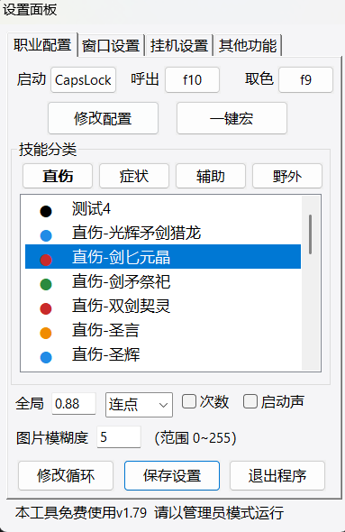
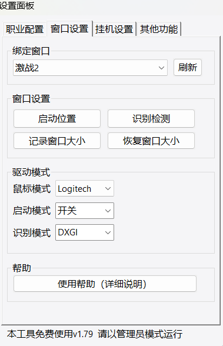
F10 UI修改，采用多层模式，减少大小。
优化部分布局。
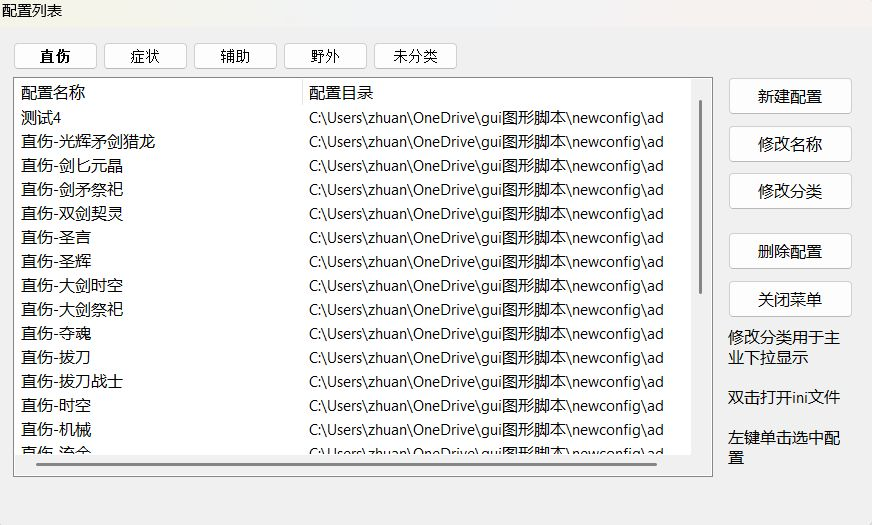
修改配置ui优化，现在支持分类切换，新建配置将自动新建在当前选中的配置中。
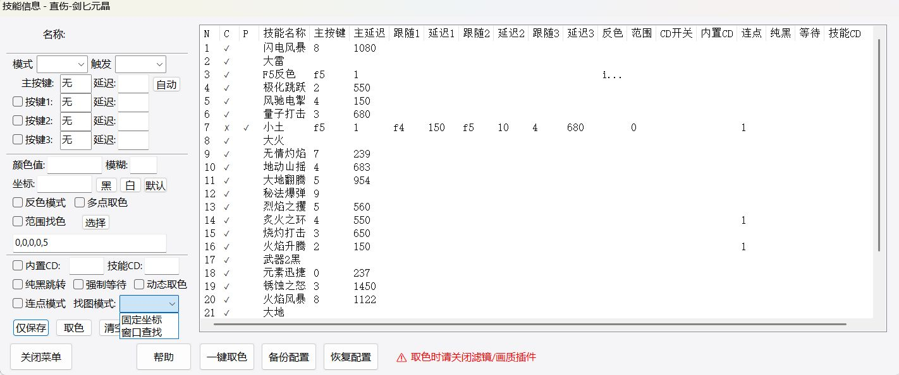
基本功能与上个版本没区别，新增找图模式的选择
窗口模式为基于当前游戏窗口全屏找图，例如buff类不固定坐标的技能。
固定坐标为为截图时框选的范围区域找图，该模式适合固定类技能，找图速度更快。
找图模糊度可在F10主页修改，建议5-20，以前默认50可作废。
示例：
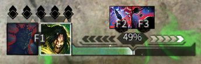
以龙魂职业为例，在旧版中，确认当前姿态冷却完毕，需要获取左侧的姿态图标，反色+范围找色+白色才行。
例如：刺客切契灵
这里直接获取左侧姿态图标就行，而不是获取当前姿态
判断依据是左侧处于契灵姿态，同时倒计时结束，图片符合，则刺客切契灵。
反着也是一样，如果当前姿态为契灵
那么截图不要获取当前姿态的图标，而是获取左边姿态的图标，表示左侧无倒计时cd，则契灵切刺客。
截图功能，逐步测试，具体是否采纳看后续反馈。
目前bug，对于纯黑背景图片识别效果不好。
历史更新
新增自动钓鱼功能，可查看下方地址
评论列表（419）
m佬目前有没有一键关闭功能，比如我想按鼠标侧键关闭步枪5再按一下打开步枪5
@小o 临时禁止某一个技能？
@melis 是的
同样取色文件 在1.79版本比1.8x版本高出1k伤害
@～.～ 推测是循环延迟导致，新版由于cpu占用需要考虑部分低配置，加了16毫秒延迟，之前版本是没有，如果按照部分职业来算，多个16毫秒差不多能提升1k左右伤害。
@melis 如果可以，大佬可以添加相关开关选项，默认增加16ms延迟，但可以手动取消增加延迟开关
来咯来咯，图标终于来了。立马下载
大佬，不知道怎么回事，配置全部丢失，然后特别的卡顿，游戏正常的早上还能用，中午就完全没用了，然后配置全没，
@147369 配置在同目录的newconfig目录下，的ad ap fz yw文件夹内，如果文件存在就说明没问题，工具不会删除配置文件
@melis 里面确实没有了，我回收站也没有，~~~里面只有我重新建立的文件，现在就是打开修改配置的按钮会自动卡好长时间，不知道怎么回事。早上都好着，什么配置都没有变。
@147369 用的是什么版本？
@melis 一直用的是1.793
@147369 建议自己排查下，旧版没有这个问题，可能是被杀毒拦截导致没有正常显示，至于.exe同目录的配置消失问题，跟软件自身无关，或者你自己全盘搜索下以前的配置文件，例如，直伤夺魂.ini，看能否找到
@melis 我找到问题了，因为我把全屏的伽马值调节后，颜色变了，所以说程序是没问题的，
大佬问下，自由宏昨天还正常使用，今天突然所以宏用不了怎么回事呢
@陈晨 开启调试模式检查下颜色是否变动，另外看看是否是管理员运行的
@melis 知道怎么回事了，是添加了鼠标驱动，没有打开
大佬问下，自由宏昨天还正常使用，今天突然所以宏用不了怎么回事呢，
大佬，在哪里下载呀？
@ppwq 电脑打开
M佬，新版本还能弄动态延迟跟鼠标联动吗
@97kkb 鼠标模式可用，也支持随机延迟，f9选择鼠标左右键，填入主延迟信息就行。
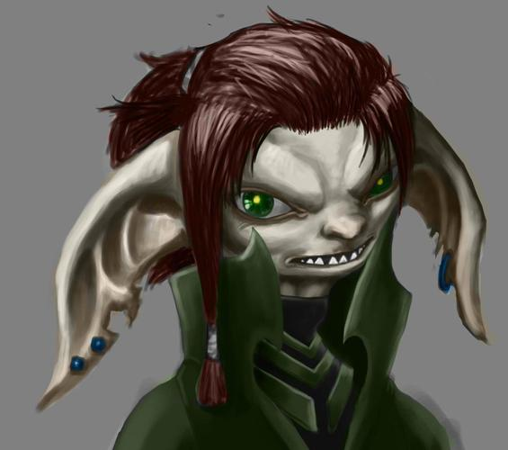
大佬你好！由于工作原因有一年半没玩游戏，昨天刚下载了回来，准备回流玩一下。以前一直使用的1.593的版本，觉得很不错！看这有更新现在的1.85版，直接不会使用了。能不能出一基础的视频教程啊·
@严半仙7032 具体可以看右侧教程，抽空会做，如果你理解能力强其实跟原版没区别，就是按照技能顺序，填入技能名称，然后取色就行，也可以通过别人发布的信息，导入别人分享的数据，然后自己本地取色。
@melis 大佬你好！谢谢你的回复。40多岁了，没读什么书，就是有点理解不了，看着好多的选项，框框，就懵了！！如果您有时间能做个以前版本那种讲解视频就好了！谢谢你了！
自由循环1.85.exe下载后，win10自带的安全中心提示有Program:Win32/Contebrew.A!ml，并自动删除了。win11也是如此。怎么办?
@金刚不坏 添加信任，管理员运行
大佬，最近遇到个问题，ahk开启后，武器5技能只放一次，后边就不放5了。1.78，1.8x的版本都会这样，但是1.75b就没事。（可能跟某次不小心设置启动键时弄成5有关，但在另一台电脑上没有复现。
@不是大佬 5技能只在起手中会放，主循环不放
@不是大佬 排除法，先删除其他与5技能无关的技能，然后只保留5技能，去机场，开启循环后，手动重置技能，看后续5技能是否会继续释放，如果可以放，说明是5技能的上一个技能干扰导致。
@melis 感谢大佬
M大佬，现在我碰个问题，使用1.793版本，使用一段时间以后，AHK软件取色大部分丢失，恢复配置以后也没用，只留下平A和个别技能，大部分取色丢失，恢复起来特别麻烦，能不能把设置好的配置打包单独存放，万一再出现这个问题，可以一键恢复。我使用的是办公室电脑，不存在画质挑战和滤镜的问题。
我取色角色是龙魂，昨天使用龙魂的配置给玉偃师用了一段时间的自动平A，是不是这个原因呢
@我是烟鬼 有没可能是你窗口大小动了 保存过窗口大小可以恢复一下
@. 没有，我一直是窗口模式，没调整过
@13331318912 你应该是 误触了窗口，改变了窗口的大小导致，f10里面有一个记录窗口大小的按钮，如果下次不识别，可以点击恢复窗口大小，如果你发现无法触发技能，可以f10点击其他，勾选调试，保存后技能游戏启动，如果技能可用，会显示出技能名字，不可用是空白，就说明颜色坐标跟你之前记录的不一致。
@melis 我也和他相同问题，用着用着有些技能就不放了。 半年没玩了最近回归更新的新版，用的半年前的版本是正常的。
@我是烟鬼 尤其龙魂切姿态和能量，每次取色都很麻烦，各种不准确，每次重新搞一次时间特别长
m大，我的最新版这样子的，没办法看到窗口前面一点的也没办法滚轮滑动上去，然后依旧呼出是2个屏幕正中间的。2k分辨率
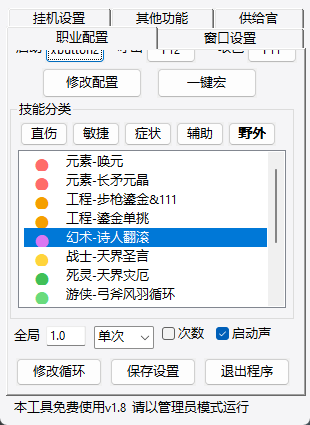
大佬是不是最新版的延迟有上限，我战士循环斧5总是放不完，延迟设为5000都没用，但是1.783就没这个问题
@xyq565861 你开日志检查下，是不是被普攻打断了，去掉普攻看是否正常。
大佬，为什么我每次写循环，大概按了10来个技能后就不能按照循序继续下去，好像是在按照优先级模式那里亮了点哪里，而且靠后的技能很少按。
@haiyur66 默认只支持优先级模式 ，靠前的亮了会优先按，靠后的如果一直被前面的技能打断，永远不会触发。
@melis 好的，跟我想的一样，感谢大佬讲解。
大佬，贼的技能如果取色取到能量条上，技能释放后颜色完全没变，这样的话跟普通技能的延迟计算逻辑会有区别吗？
@不是大佬 会重复触发，但是次数也会持续+1
@melis 等待时间跟正常情况是不是不一样了啊，我记得之前说技能触发后有个200ms的颜色检测
@不是大佬 按你填写的延迟等待
大佬，最新版1.81复制网页循环进去闪了一下什么都没导入
@萨达 已发现bug，sc数据导入异常，网页数据可正常导入，等晚点修复。
大佬现在的AHK，是不是不能神秘熔炉自动合成了
@A85759997 识图模式没问题，模糊度要加一点，图片识别要改成窗口查找
大佬 关于起手循环可不可以开发一个按键
按这个按键不执行起手直接进入主循环呢?
有带起手的循环按键和不带起手的循环按键
@UniqueEgo 或者可以给多个配置指定多个按键
这样也可以方便切换整套循环
@UniqueEgo 快捷修改f9，直接改按键仅保存就行
可否加入一个**按键替换**功能，一侧是别人循环的按键，一侧可以输入自己的按键，然后点一下替换就换成自己的按键了
大佬，最近出现个问题，每次正常用的循环，再打开或者启停几次，就会失灵，只平A。只有重新取色几个键才正常循环下去，也重新下载过了，备份恢复也试过了
@aaa 找到问题就是，每次我换别的循环或者重新打开软件，丢取色的就是固定拿两三个键，每次切回来都得对这几个键重新取色。之前还没事，这两天才出现这个问题
@aaa 开了画质，或则n卡里的超分辨率
@melis 大佬，实在不好意思还得请教一下。我检查了一下，N卡里面超高分辨没开，然后重新装了DPS插件，这次直接没选滤镜安装，然后又重新下载的云盘里的插件，还是有这个问题，不知道怎么调了
@melis 开诊断和日志，就提示未命中跳过，重新F9取色第一个技能，整个循环就正常了。切角色或者切别的循环又出错了
@aaa 这个我也无法解决，开启调试后，技能游戏启动循环，人物移动，如果人物移动过程，技能名称消失，就说明你有其他画质影响，最好自己排除，包括N卡自身的滤镜，光鲜亮丽。
@aaa 你这肯定是有别的画质影响，正常测试某一个技能，进入游戏退出游戏，这个颜色不会变，看看你是不是装了神游插件，按Home可以呼出。
@melis 神游插件的滤镜都卸载了，然后我开调试模式进循环，也一直移动，技能名称都在，也显示颜色结果命中，但就是一直在平A，hhhh没招了
@aaa 取色全部取9点位置，技能识别不要取纯黑色
@aaa 你是不是挂机设置里的挂机开关没关闭？
大佬我的触发按键无法设置成q键了是啥情况（软件打开Q键就失效了）
大佬我想问一下如果我想让某个buff消失就自动放技能要怎么写
@111 截图模式，框选buff图标，然后勾选反色，f9里的找图模式，改成 窗口，找图模糊度改为50+
萌新 哪里下载软件啊
@卡卡 主页右侧，百度网盘
大佬如果改成以前的独立循环识别速度，是不是占用资源和以前一样了
@1123 不是，只是恢复到1.78的方式而已，占用没区别
分类能不能支持下自定义，大佬
@longly 不行
大佬，更新1.792之后，之前写过的循环基本都失效了，有些技能根本不放，能放的技能先后顺序也是乱的
@kpd 本地没发现问题，最新版增加了个诊断日志，你自己排查下。
@melis 日志看不出来，比如我写的循环是先5 后4 日志里就是先4 后5 完全不知道为啥
@melis 就是新版的问题，782还是好好的 新版基本都用不了了
@kpd 窗口、还是全屏，例如某一个职业中是否包含修改模糊度的技能
@melis 一直是窗口全屏，没有模糊度
@melis 而且我发现很多跟随按键的延迟啥的是不是有什么改动，782 先驱帷幕0延迟跟随帷幕3是正常释放，792之后 帷幕3就跟随放不出来了，必须提高进入帷幕的延迟 从0改成100才能释放
@kpd 之前写奶燃时候到改动，新版已上传，应该无问题了，你之前0延迟也能用，是因为本来有一个内部判断，技能触发后，有一个检测，200毫秒内如果变色会直接执行下个按键，没变色就继续等，所以你0ms才能用，这个写法很明显是错的，游戏里也不可能0ms的按键。
@melis 好的，我重新写一下吧
@kpd 不用重写，恢复1.78的等待方式而已。
@melis 我写了一堆带0的循环 看来都得改了
@kpd 写0也是会等待200毫秒，图标变色后才会执行后续判断
@melis 但是我试了下今天下午新版本，比较典型就是旧版的先驱 跟随按键几乎都出毛病了，必须手动改100ms才管用，而且总体感觉792 793和78x版本的识别还是延迟啥的，都有变化，鲜血力量后面跟的瘟疫纹章也是，换到79x版本后必须重新提高一下鲜血力量的延迟，然后瘟疫纹章才能正常传染，太难受了，微调的地方特别多，而且有的时候 循环的第一个技能有时候还不放 直接跳过
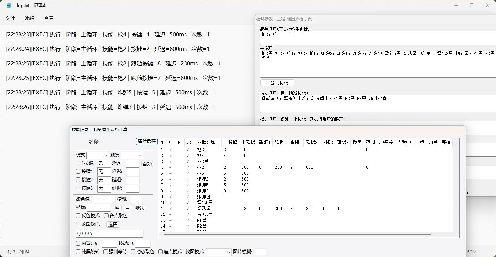
@kpd 最近几个版本是会这样，我也调整了全局延时，微调个别技能的技能延时。还有就是有时候要停手，停止脚本，再开启的时候，会先放4技能，在放2技能，和你日志这个一样。
大佬，想问一下F9中，技能前面的那个P是什么意思？
@手残党 color mode picmode
1.791和1.792都会掉线，什么错误，然后出现一个记事本
1.792打开交易中心会掉线，我电脑是老系统，有黄边的那种
@方方方 有报错最好贴图上来
@melis 忘了拍照片，不过我换了其他的 也是掉线 最后蓝屏开不了机了，我把内存拔了一根换成单通道现在彻底没事了
@melis 是不是我内存条坏了啊？报错出一排英文，关闭后出现那种配置文件夹，笔记类型的
@方方方 有可能，如果你装了dps插件，可能是版本没更新导致游戏报错。
@melis 装DPS插件了，不过应该是内存的原因。现在没问题了
大佬最新版本 取色第二个技能时不能固定画面取色 类似动态取色
@. 没看懂什么意思，单独取色按钮都是冻结屏幕，如果要不冻结，勾选动态取色后，在点击取色按钮。
大佬 技能延迟限制10毫秒 就是说即便设置延迟是1毫秒 实际延迟也是10毫秒么
@. 是 改成1 内部也是10
@melis 哈哈 难怪新版本机场再打也低那么0.几k
这次更新后，起手循环不是每次启动都有呢，是不是改成只有启动之后的一次了？
@桑桑芒 起手循环一直都只有一次，新版如果技能里有内置cd，或者技能cd，起手也会根据及时决定是否释放。每次启动后，都会重新识别一次起手的技能循环，只执行一次。
@melis 谢谢m大佬
b站风羽那套循环移植过来为什么一直连着切武器？没有开连点模式，还有箭7要怎么取色，图标太小取不了色，截图的话也不行
@鱼7 抽空做一期，跟狂兽原理一样，用次数判断羽毛，羽毛用模糊度取色。
这个1.79的版本我win10，一启动游戏就网络断开。
@longly 把你启动闪退的职业配置发我，技能低于10毫秒+连续点击，游戏的内置判定，是会网络中断。我看下是哪的问题。
最近的2个版本，我双屏有一个问题，呼出的时候会2个屏幕各占一半，哈哈~很尴尬，在正中间，是不是代码是在屏幕中间。我双屏的中间就是一个屏幕一半
@我是字母 基于当前鼠标所在的屏幕中心，估计没识别 显示器1-2导致，合并成了1个整体，等后面修复。
@melis 好滴好滴，辛苦大佬
有个小问题，按f9 动态取色 以后，在按f9不会弹出界面了，必须要按一次f10以后，在按f9才会弹出页面
@1234 好了现在最新版本已经修复了
为什么你的圆圈有颜色 我的怎么没有啊
@longly 双击职业名称
大佬，我是最新版。用wgc的话只有主屏幕能够识别释放，副屏不行 副屏在左侧屏幕，gdip就副屏可以使用，因为这里检测wgc里面的fps更高。
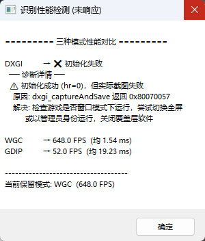
@我是字母 wgc模式兼容性不行，换dxgi看看，如果还是不行等后续修复，没设备不好测试
@melis 不行呢，用gdip 也挺好的，日常没问题。有的用就很好
标签页显示不全，是个人的电脑原因吗？
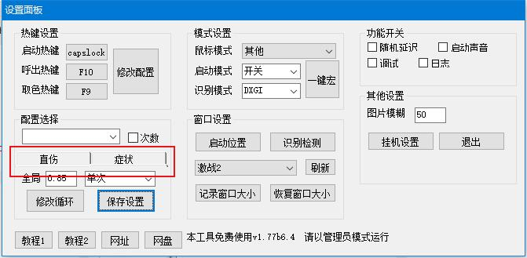
@黑色毛衣 应该是，等晚些更新，新版只改动了ui，其他跟上个版本一样
1.77b6.2和最新的这个1.77b6.3 停止后再按开启，不能立即开启，会有延时。1.77b5使用就正常的，不会有延时情况。
@黑色毛衣 已修，最新时间。
@melis 最新版本停止的时候会弹出日志文件。
@黑色毛衣 好了
剑2=1=剑切武器，利剑3=利剑3黑=切武器，夺魂类似这种条件判断不会切武器
@searover7 剑2，必须在循环中存在，如果不存在，剑2次数就没法计算，那么剑2=1 永远是0，你可以先用循环 剑2，剑2=1=切武器 测试，切武器按键是否能执行，如果切武器按键不起作用，换一个其他按键测试。
@melis 感谢
大佬66666，可以将挂机25分钟设置成参数，自己填吗？有时候洗个澡都超过了，哈哈，
大佬牛x 十分感谢
M大，你好 咨询个问题，SC导出的数据，导入后 只有技能名称 没有延迟 和 主按键 是我哪里操作的不对吗
@独木成林 最新版，已经修复
@melis 不行呀 大佬 。还是读不出来延迟哪
@独木成林 最新时间的 已经修好了
1.77b4.1版本 进入帷幕>12000=退出帷幕 语句无法触发，b3.4及以前的版本都能正常触发
@111 测试无问题，最简单的方法，武器2，武器3>2000=武器3 测试 如果可用就说明计时无问题。
@melis 投掷b型试剂>8000=功能机械f5，防御立场>12000=投掷b型试剂，功能机械>10000=防御立场，本来用的是这套循环维持稳固，在起手循环里填入投掷b型试剂，就可以实现无限维持稳固buff，b4版本优化技能计时判断后就无法实现了，只会读取一个起手循环的投掷b型试剂，后面就不再释放这三个稳固技能
@111 打错了，循环是，起手循环：投掷b型试剂 主循环：投掷b型试剂>8000=功能机械，防御立场>12000=投掷b型试剂，功能机械>10000=防御立场
@111 修了 看公告 之前起手是无法记录时间的
@melis 辛苦大佬
请问哪里下载？
@1229880063 主页右边 电脑登录
1.77b4.1 普攻无法触发
@222 技能1=技能2=普攻，Ok
普攻，ok 你说的是哪种
@melis 就是直接 普攻
@melis 不知道 为什么 全屏正常 窗口普攻 不行
@222 你只留一个普攻，全屏跟窗口都测试下，普攻不用识别颜色，直接按键，不可能不识别。
你应该是其他技能干扰导致
b4.1，取色的时候，会重复上一次选择的取色技能，假如你先取色1技能，取好后你取色2技能，双击2技能的时候，取色界面是1技能的界面，需要取消后再双击2技能才是2的取色界面！不知道是不是只有我有这问题！@melis
@1 没事，下了最新传的，就没这问题了！
1.77b4.1 起手循环 多种判断 技能1=技能2 无法触发，大剑时空
@动了动 起手循环武器2=武器3，可以正常释放，如果是7点的版本，升级成刚传的。
最新版咋又有黄框了？我win10 22h2.
@游客789 最新的没有改动识别相关代码，测试没这个情况，建议对比下前几个版本
自动获取延时 仅保存后 双击下一个技能 弹出界面还是上一个技能的编辑窗口
@132 更新了，esc才会，获取成功不会
b4 通用技能用不了起手
@花舞无双 单个技能能判断，加入武器就释放不了
@花舞无双 b4 起手循环有问题 不单单是通用技能 武器也一样
@JJ 已修
n卡 游戏窗口 三种模式加载成功 ，dxgi wgc 截图失败。全屏都正常
@help 右侧疑难解答看看，安装DirectX补丁，另外看游戏是否运行了神游等覆盖画面的插件。
我能问下 F10后软件跳出来的窗口位置怎么才能让它默认位置上移呢？ 我是桌面4K 游戏无边框2K，每次打开 修改循环下面的确定会被任务栏挡住，每次都手动拉上来，稍微高点就没事了
@aaaa 呼出位置基于你游戏窗口的居中位置，你在游戏窗口内呼出就行。
大佬我用DXGI模式时候，抓取图片显示特别黑，和正常取色时候差别特别大，导致无法使用ahk自动循环，试用了所有版本都存在这个问题，只能用另外两个模式
@达比 我是au加a卡，另一台电脑iu加n卡就没这个问题，我也把所有滤镜相关都关闭了，也试过重装驱动什么的，还是无法解决，目前这个情况不影响使用，只是有点好奇为什么会出现这个问题，麻烦大佬了
@达比 刚更新了下系统，发现问题还是存在，等过两天我试试重装系统能不能解决问题
@达比 a卡窗口模式无法运行，推荐gdip，或者wgc，wgc延迟跟dxgi区别不大，或者点击识别检测-一键诊断
请问上钩要设置按键吗？鼠标要识别吗？
@111 上钩识别了，钓鱼时黄匡好像不跟着绿快走QAQ我按说明取色的 ，钓鱼取绿色中心，浮标取黄匡中心。鼠标识别，结果黄匡一直往一个方向按。
@111 模糊度改成0
@melis 我都按上面教程改的，除了取色和框选范围都一样。就是浮标不跟着绿条走=。=
@111 你按键是不是改过，默认是左2 右3
@melis 没有呢，23都会触发，就是没跟着绿块走，经常一段顶着。
@111 自己调下 黄色中心点模糊度看看，范围取色要框对位置
@111 只有钓鱼开启后的那个1键抛竿，以及上钩的紫色感叹号要设置按键，其他的不用
请问大佬，最新版，一用来打大型突破就掉线，以前1.76不会掉线，新版的掉线，而且普攻也不好用，需要重新取色吗？
@红红 掉线说明你延迟太低，导致触发了游戏内置的按键检测，必须大于25毫秒，你看你是不是有技能没填延迟
请问那个开字可以隐藏不显示吗
@xcv 不行
@melis 3.2 3.3 3.4都用了，输出最高现在是77b3.2 差距有1k多
@xcv 循环方面没有区别，可能主要是识别影响，以新版为准，或者自行调节全局延迟。
大佬3.x的版本f9取色，但是如果f9在游戏里设置了其他功能比如pvp面板，取色时候pvp面板就会弹出来，以前的版本就不会弹出来
@1234 最新的覆盖
1.77b3.4 普攻不能用了
@333 测试没问题，普攻，测试可以，技能2=普攻，也可以
大佬 从1.6版本更新到1.77b3.2以及1.77b3.3两个版本后 （ 切武器可用=宠物觉醒，宠物觉醒=1=伏击）这个次数判断就不生效了 日志上只会进行以下循环
[18:18:51][EXEC] 主循环，切武器可用执行，0次，执行，宠物觉醒，按键F1，次数:1
[18:18:51][EXEC] 主循环，宠物觉醒，跟随按键F1，次数:1
[18:18:52][EXEC] 主循环，宠物觉醒，跟随按键1，次数:1
[18:18:53][EXEC] 主循环，切武器可用执行，0次，执行，宠物觉醒，按键F1，次数:2
[18:18:54][EXEC] 主循环，宠物觉醒，跟随按键F1，次数:2
[18:18:55][EXEC] 主循环，宠物觉醒，跟随按键1，次数:2
请问这是什么原因
@夜色名为温柔 1.77b1.6 升级到 1.77b3.3
@夜色名为温柔 最好重新取色看看，武器2=武器3，武器3=1=武器4，测试这个条件是没问题，能正确触发，武器3=1=武器4的条件。
[19:38:22][EXEC] 主循环，武器2执行，0次，执行，武器3，按键3，次数:1
[19:38:23][EXEC] 主循环，武器3执行，1次，执行，武器4，按键4，次数:1
要是重新开机后，就需要重新取色，不然就不能用，求问是那个地方出问题了
@筱筱 右侧疑难解答里查看相关问题
钓鱼的2 3按的太慢了~~ 怎么弄快点
@666 钓鱼里是不支持点击模式的，只支持按下，如果识别的慢，说明底部那个黄条取色不对，两个都不加模糊度看看。
钓鱼前最好吃寿司提高力量，否则可移动的位置太小，要掉半天。
@melis 就是最近底部那个黄色条 取得中间~~ 就是一顿一顿的 跟不上 绿色滑块~~
@melis dxgi wgc 只能游戏全屏下才能用，窗口模式只能用gdip
@melis 找到原因了 还是识别模式的问题 DXGI 钓鱼不卡顿 但是只能游戏全屏才能用~~
@666 游戏窗口化，f10-识别检测-一键诊断，看dxgi wgc gdip是否打勾
@melis 是win11 系统 一键诊断全部打勾 和你贴的诊断图一模一样，然后在按识别速度检测就只有GDIp正常了，其他两个模式都加载失败。 然后在一键诊断,就只有wgc打x，dxgi和gdip都打的✓，但是只有gdip能用~~！最关键的是 游戏全屏模式下 三个模式又都正常了~~~
@666 你窗口模式下，是不是把游戏窗口的一半画面拖到了屏幕外面。
传了个新的，在窗口模式，跟全屏模式分别一键检测下。
@melis 游戏窗口模式，第一次一键诊断全部打勾，然后识别检测速度 只有gdip打勾，抓图只有gdip正常。 全屏模式 一键检测 只有dxgi gdip 打勾，识别检测速度 抓图测试，dxgi gdip正常
@melis 反正就是 游戏全屏 三模式都能用 游戏窗口 只有gdip能用~~~
@666 你也是a卡吧，暂时无法解决，如果用以前1.76的方式cpu会占用比较多。
大佬我系统是win11
=三种模式性能对比=
DXGI
一X初始化失败，已跳过测试
WGC
→602.8FPS (均1.66ms)
GDIP
一36.0FPS (均27.78ms)
当前保留模式:WGC(602.8FPS)
我旧版本的能放技能，下了最新的用wgc不会放技能，改成gdip模式可以，a卡，英特尔14600的u
@我是字母 可以先用gdip，我排查下，你说的旧版指的是1.76还是以前的
@melis 自由循环v1.76b2 这个版本，用wgc能放技能，但是最新的今天23号的就不行，然后dxgi初始化是成功的但是截图是失败的，原因:dxgi_captureAndSave 返回0x80070057。A卡
@我是字母 76跟77实现方式不一样，前面的cpu占用比较多。A卡暂时无法解决，先用gdip吧，或者全屏游戏。
大佬，大剑长矛直伤圣辉，取色之后1.77b1.3的版本能正常使用，（中间的一些版本没下载）最新的1.77b3.2只打几个技能不能正常使用
@222 以新版本为准，如果不能放重新取色，最新3.2打开调试模式，按启动热键，如果当前技能颜色一致，左上角会显示符合。
@melis 测试了还是不行。即使关了滤镜，重新取色，只会放普攻和2技能，其他都不放。头疼
@222 调试模式如果不显示你取过色的技能，说明屏幕与本地颜色不一致。
最新版b3跟1.75 1.76颜色是共用的，不用重新取色。
如果你之前版本不能用，b3肯定也不行
大佬最新版的黄色边框怎么取消啊
@纸 这篇文章置顶
大佬，技能按键不能设置成鼠标侧键嘛
@明月cx 不能，自带的按键模块不支持
大佬开启这个打本有时候会非常卡，画面类似掉帧很严重那样，从60帧掉到30帧那种感觉，循环比较简单的不会出现，就是循环写的多一点那种会出现，卡也不会一直卡过那么十几秒又不卡了，过会可能还卡。1.75b3-1我用这个版本就不会卡，不过比1.77 cpu占用高很多，1.682也不卡就是少了很多新功能，我配置14400f+1660ti，三种识别模式都试过了都会卡
@1234 窗口还是全屏，模式是哪个，用gdip测试下看看如何。
@melis 这种卡顿其实在早期的1.592以后的版本也出现过，只不过那会卡顿比1.77版本严重，我是哪个版本都使用过，直到用到了1.682，1.682全屏dxgi，gdip都不卡，窗口模式下gdip会有画面掉帧卡顿，换dxgi就不卡了，后来就是用到了1.75b3-1这个有了新功能也不错，不过和1.682一样都是窗口gdip卡顿。1.77的几个版本窗口dxgi和gdip都卡顿，全屏没试。是不是和win10版本有关，我用的ltsc2019.
@1234 应该是系统版本问题导致，1804之前支持不太行，或者你换wgc看能不能用
@1234 可以试试最新版，动态延迟模式，开启后看如何。
大佬大佬，我这边从 1.75b4 换到 1.77b3 后，偏长释放时间的技能会被普攻打断，这个是我这边配置的问题吗？
注：循环最后放了 普攻。
@一段灬时光丶 当循环中所有技能不可用的时候，才会使用普攻，如果你被打断了，可能是技能延迟给的不够，例如战士的斧5，转圈一半被普攻打断，可以新建个配置自己试试，放1个斧5，一个普攻。如果还有问题可以复现下。
@melis 大佬，今天版本已经更换至当前最新版本：v1.77b3.3，上述描述的问题经过 战士 斧5、普攻测试仍然存在。配置文件内容如下：
[延迟信息]
全局延迟=1.0
fastskill=1
amb=0.8
随机延迟=1
[技能循环]
起手循环=
循环顺序=斧5，普攻
独立循环=
指定循环=
特性=
装备备注=
清空次数=1
[技能信息]
斧5=5,3500,,,,,,,clm,,,,,,,,,,触发,0,,0
普攻=1,280,,,,,,,,,,,,,,,,,触发,0,,0
[颜色信息]
斧5x=1175
斧5y=1352
斧5color=0xBA6926
普攻color=
@melis 大佬，刚对所有设置面板勾选按钮逐个测试后，发现该问题与 【随机延迟】有关。取消勾选后，普攻不会再打断斧5，反之斧5会被打断。
@一段灬时光丶 激战2技能都是固定的，不需要开随机延迟，这个是给一些网游防挂机用的
大佬大佬，从版本1.75b4更换到 版本1.77b3后，新版本 释放时间长的技能会被普攻打断，
1.77b3 f9取色 没有放大镜
@333 多点取色会清空该技能信息
@132 修了
@333 已修，刚传
M佬，现在自由循环的话支持用滤镜插件吗？
@张怀仙 不支持，开了没法用，开了滤镜技能图标是动态的，会导致技能冷却中依然在按键的情况，没法用。
@melis 好的M佬
177b3 只有gdip可用 其他两个模式都是初始化失败~~ 么有杀毒软件拦截，不知道是为啥~
@动了动 卸载激战2 神游插件，右键管理员运行，如果没用只能用gdip
@melis大佬，新版177b2、177b3版，双剑直伤契灵范围取色失效，“姿态范围”范围取色：框选出区域后，设置0xFFFFFF白色，并勾选反色，模糊度为20，启动后不执行切换姿态，特告知。
@访客 176b4版无范围取色问题。
@访客 已修，网盘最新的
原因是，如果你没取色，而是直接输入的0xfffff，坐标x,y是空信息，导致跳过判断。
@melis 今天试了一下最新版，范围取色生效，“姿态切换”正常了，谢谢大佬！
大佬，从1.76版本以后到目前的1.77B2，我把按键全改成了数字，我游戏里按键也改成了数字，只有我的闪避是Shift，
开启宏的时候不会自动闪避，但是在我运行宏的时候，按了闪避键Shift一次，就开始出现自动闪避了，相当于自动按下了Shift
我从新下载软件 ，在新的位置运行显示：自由循环v1.77b2.exe
x
Error: "ERROR" is not a valid key name.
Line#
6226:Hotkey,%savecolorkey%,getskillist
The current thread will exit.
确定
@土豆 已知bug，晚些修复
@土豆 已修，如果你还是报错，删除掉bd_config.ini，或者
savecolorkey=F9
savekey=F10
startkey=CapsLock
手动改成默认
@melis M大佬，这个问题最新版也存在。我是用的步枪丁真BD，在手雷包的时候shift翻滚后，就会在有耐力的时候自动翻滚。在步枪的时候，翻滚，就不会触发这个BUG
@yaiba 你把你按键说下，除了翻滚是shift还有哪个是的
@melis 武器 12345 通用 qercv 切武器 ` 翻滚shift
@yaiba 试下刚传的，重新设置下热键，然后开启日志，进游戏开启循环，在自动闪避的时候关闭循环，在文件目录找到log.ini看看最后一个释放的技能是什么。
@melis 机器人F2，步枪4，步枪3，步枪2|步枪4，超频纹章，步枪3，步枪2，手雷2-反=手雷4-反=切回步枪，手雷5，手雷4，步枪3|手雷5-反=手雷4-反=手雷2，机器人F3，机器人F2，机器人F1|
机器人F2,F2,750|步枪4,4,450|步枪3,3,450|步枪2,2,400,r,100,2,200,F6,500,,,,b|超频纹章,v,|手雷2-反|手雷4-反|切回步枪,r,|手雷5,5,450|手雷4,4,500,7,50|手雷5-反|手雷2,2,|机器人F3,F3,500|机器人F1,F1,2000
[&DQMGNyYvRh8NGyoPEBteAYYAXwEaG40BCRuJAQAAAAAAAAAAAAAAAAAAAAACVQAzAAA=]
将翻滚键“shift“改成 “G” 键后，这个问题消失。
将翻滚键“空格”改成 “alt” 键后，在循环开启中跳跃，那么在后面的循环中，就会时不时自动跳。
出现问题的时机，一般在切武器前后这个时间点，跳跃或者翻滚
不用shift和alt 应该就没这个问题。
177b2目前是最舒服，输出最高的版本
1，2循环还是没解决 最新版的刚下的
刚才又更新了一版，你在看看wincapture.dll会自动寻找脚本目录所有子目录，防止出现没找到就运行的问题。
@melis 我删了客户端 重新下载的咱们的插件 问题解除 说下原因 之前装过神油插件 里面有滤镜 所以导致试图问题 删掉神油插件未能解决 所以重新下的全新的客户端，问题解决 在这里 感谢大神的插件 很棒 是我自己下的插件导致 在此也告诫下其他遇到问题的同仁 检查你是否装了除了大神插件外的任何插件 如果有请卸载 会导致识图不到技能图标所以会引起各种问题 再次感谢大神耐心的教导 辛苦的付出 爱心❤
@卐劍聖卍 还有就是插件下载到哪就用在哪不要移动了 防止wincapture.dll加载出错。
这次 5.17更新后就只能按键1 和按键2触发 但是循环里就没有录入 1 和2 其他按键一律不识别不触发 只在1，2循环 5.18也下载了最新的了 识图后只能用GDIP模式 win11杀毒就没开啊 有之前的保护记录 都给点信任了 还是提示wincapture.dll文件加载错误。
@卐劍聖卍 win10也一样 只有gdip可用 其他两个模式测试 只能抓取打开软件第一时间的图 后边截图就都是黑屏了 1.76版本三个模式都没有问题
@～ 新版提示wincapture.dll文件加载错误只能是被杀毒拦截或者360、火绒，导致无法读取外部数据。
优先右键管理员运行，然后把.dll放在同一个目录下。
点击最新时间的，识别检测，会自动检测哪些模式可用。
你可以看下面留言没人反应你这个情况。
@melis 他的情况和我一样的 没有下载任何杀毒卫士 微软的都没用 就是反应下 1.76挺好的一切都挺正常 有的用已经很感谢了
刚才又更新了一版，你在看看wincapture.dll会自动寻找脚本目录所有子目录，防止出现没找到就运行的问题。
@melis 还是不行 显卡驱动更新也没用 最后一个正常使用的版本是 1.77 b1.5三个模式都正常 我这可能是个别系统问题吧 不追求最新已经够用了 感谢大佬
1.77b2 wgc 无法使用
@飞飞 更新
1.77B2直伤时空 占用很高，CPU温度也高，1.77B161 没这个情况.
牛批，体感1.77b2流畅很多
1.77b2好像 = 条件无法生效
@1 修了
@melis 哇，那么晚还在，，辛苦
1.77b1.61,风羽宏会卡强化普攻，1.77b1.6不会
@1 不确定具体原因，按键相关这几个版本都没改过，如果出现卡顿可以尝试修改延迟
感谢分享！
最新的B1.6版本，F9页面 按键和延迟 有问题。
@yaiba5530 网盘最新时间的覆盖
@melis 最新版的F9界面取色后，会清空取色技能的全部信息。
@yaiba 重新关了一下，又好了。
@yaiba 故障复现，F9界面，先改技能按键，再取色。就会清空改技能信息。
你复现一下步骤
@melis 按F9呼出 取色界面，在该界面选一个技能，在这个界面改技能按键。然后在这个界面点取色按钮，进入游戏F9取色，取完色出来，这个技能的按键信息就被清空了。
@yaiba 收到，下午更新
大佬请问一下新版本的自由循环在屏幕边缘会有个黄框，怎么关掉
win10+特性，录屏会提示，关不掉。
@melis 有黄框鼠标还变成了透明的 正常吗
win10安全特性
新版本1.6 wgc模式主循环失效 其他两个模式没问题
@. 已修
@melis 大佬新版弹窗 WGC模式没有初始化成功
没发现这个问题，检查是不是被杀毒拦截了，或者对比1.77其他版本
@melis @错了 尴尬
@. 大佬 昨天修复都正常了 今天更新后 wgc和dxgi 都主循环失效了 起手，独立可以触发
@. 没发现你说的问题，也没有其他人反应过，建议自查下是不是自带了画质插件影响了颜色。
@melis 感谢大佬关注，没有开过画质插件，我先用10号的版本吧
刚才测试，3种模式，窗口，全屏，都没问题，窗口模式下，3种模式取色共用。你先检查下取色问题，使用最新时间上传的重新取色看看，或者f10识别检测，截图模式，如果能正确获得游戏窗口就没问题，如果截图出现错位就是不对的。
@melis 重装系统解决了 win10 20348内核版本 还可关闭抓屏黄边框
大佬，最新的1.77b1.5 截图功能好像一直没法用，截图之后，F9列表里面对应项目前面还是×，实际也没发挥作用
@划水老司机 是不是因为截图功能不能用于条件判断？比如我希望判断没有稳固时候使用功能机械，我写的是稳固=功能机械，然后稳固反色截图取色，功能机械正常取色设置延迟，执行时候就没法执行
已修，1.6
大佬，我的闪避是 Shift 自由循环v1.77b1.5.exe和上一个版本开启自动宏了以后都偶尔出现 闪避，尤其我在按着WSAD 移动键的时候出现，而且我自己闪避一次就会大概率出发另一次闪避，不知道我设置问题还是，我一直都是下载新版本覆盖以前版本，
如果你的热键包含大写字母，就相当于是shift+字母，间接触发了shift，热键设置要在英文状态下输入，或者检查下你配置文件，热键有没有包含大写字母，或者其他组合键。
换到1.77b1 跟随按键有效果了，但是跟随延迟全是乱的，还是1.76稳啊
大佬 这两天发现出现开始启动之后屏幕画面模糊并且震颤 画面流畅降低，不知道是什么情况，刚刚排查出来是咱们软件的问题
启动中会出现这个情况 取消启动会恢复正常
1.74版本的时候这两天刚出现的启动后画面流畅度问题 换成1.77版本没有解决 1.77技能释放正常目前没发现其它问题
最新版已经上传，可以测试下不同模式之间的差异。
还是存在屏幕流畅度问题，开启后屏幕显示模糊不流畅
我也是,一开启循环游戏的画质就变糊,我试了1.75 1.76 1.77的都是一样,换了不同模式也没用
这是软件录制问题还是电脑问题啊
找到问题了...... 我显卡开了NIS 一开启循环这NIS就关掉了, 所以才导致画面变糊 我关闭了NIS现在开启循环画面就好了
@111 我把插件都卸载了，客户端重新下了排查一下，最近是插件更新 好像出的一些问题
大佬是不是忘上传了，网盘里面没有最新版
刷新下
请问下载链接在哪
更新都在右侧网盘
是不是手机看不到
pc访问
ahk.exe
Critical Error: Invalid memory read/write.
Line#
---> 7234: Return,"0x" SubStr(Format("{:08X}", NumGet(this.bits+0, y * this.pitch + x * 4, "uint")), 3, 6)
The program is now unstable and will exit.
确定
最新1.77版本有弹出报错对话框，另外普攻1 也不会施放 1技能。
不施放1技能我是添加了 手雷1反=普攻， 去掉前置条件，普攻就可以施放了。反色重新取色也不行。
已收集，等后续修复
最新版只会自动1 咋回事
+1
1.77b1.1还是只会自动AAA不会放技能，咋回事
使用f10识别检测，抓图测试，看能获取到绑定窗口的游戏画面不
重新取个色试试
新人不太懂 下载好直接用嘛？
用管理员运行了 然后弹出一个乱码提示框
无法执行程序 问下怎么回事
可以用1.76
1.77版本蔑视循环不执行了，应该不是取色问题，换回旧版本可以执行
换了1.77版本，之前使用别人改m大佬的奶时空，起手循环是：步枪2，职业5，f1，f2，f3，f2，f2，以前版本可以正常用，现在只会使用职业5然后站着发呆
我是1.76b2 直接换的1.77 跟随按键 好像没效果了
大佬，1.77不知道为什么会让直伤时空用治疗技能刷新剑5了，以前都是绑定刷新大剑4的。
最新版软件运行中 快捷方式呼出面板报错
大佬这个评论的排序不能搞成最新发的在最上面显示吗？
下次改
大佬，1.7以上所有的版本都会出现同一个问题，有时候启动位置那个“开”字一直在闪烁，循环完全不生效，而且无法重新启停，必须要退出程序重新打开才会正常，多数这种情况出现在翻滚之后，最新的1.76b2也是一样，不知道是不是大写锁定键和shift冲突？
图片在闪，可能是你游戏上有其他程序叠加，例如部分画质插件的叠加层，如果冲突可以更换其他启动热键看看。
大佬我有个想法，现在取色识别算法是基于全屏截图识别的是吗？能不能自己选取ROI区域，只框选技能栏范围，然后取色的时候根据ROI区域进行对齐，这样的资源消耗会不会更少呢？
现在取色都一堆人不明白，弄个范围更迷糊，资源消耗已经5%了这已经很低了，资源占用的主要是另外一个独立线程，是相当于重新开一个程序，叠加占用，v1版源代码是没法多线程的。
大佬 新版本内置CD好像失效了 比如手雷包内置5000CD 武器三四五黑触发进手雷包 加再多CD也是武器黑就切包
最新时间的已修
1.76b2技能计时判断无法使用了
13.14上传的已修
1.76b2起手循环 和主循环 衔接有问题不流畅~ 比1.75b7 峰值要低很多
1.75b7 ，版本， 取色都完成了， 鼠标中键启动会上飞龙
大佬新版，我玩鎏金循环开起，技能没按循环放，提前放了后面的技能
大佬 1.76b1测试版还是无故翻滚而且还老是按SHIFT+2.游戏里我SHIFT+2是设的钓鱼。一开宏动不动给钓鱼弄出来
把你现在会翻滚的循环分享给我，发过来我导入看看，以及你游戏的翻滚键
|职业F1，职业F2，职业F3，职业F5，法杖2，枪号2，枪号5||
职业F1,F1,500,,,,,,,,,,,,,,,,,,1,5000,0|职业F2,F2,10|职业F3,F3,10|职业F5,F5,10|法杖2,2,750|枪号2,2,1200|枪号5,6,500
[&DQgTJjIfPD1+FgAAMAEAAGwBAAAhFwAAlQAAAAAAAAAAAAAAAAAAAAAAAAADWQA2AGcAAA==]
翻滚就只设了左SHIFT.前面我以为是V键的原因。我把V取消了。结果还是翻滚。感觉不是循环的事。我试了几个循环都是这样。就在我游戏里开宏的情况下翻滚就会出现
你把启动热键改成其他的试试，还有输入按键的时候，切回英文输入法在输入，不是v的问题，是shift的问题，capslock默认的是大小写切换，跟shift是同一类型的按键，可能是冲突导致，你发的循环我测试依然没问题。shift翻滚，开启后也不会自动翻滚。
1.75b6 新加的取色能还是只能去一个点的~~ 不稳定 运行一到两遍宏就会自己关闭消失~~ 还是用b4
1.75B6试了一天发现，无故就翻滚，不知道怎么回事。动不动就自动翻滚，开关有两三秒的延迟，尤其是转阶段走拉的时候要关宏开宏的。点半天没反应。我自己做的拔刀重新取色了还是不行。就乱放技能，进入拔刀后它就放2或3技能或者翻滚（宏里根本没写2和3技能）不知道为什么用回74版本就好好的。
还有调色模式不知道是我没会用还是怎么回事。最多弹框出到第二个技能就中断了
佬，还是不行啊。75的版本包括最新这个B6还是乱放技能，要不就是不放。同样的宏在74.B3里运行的好好的
但是这个新版本确实运行起来CPU温度比前面的版本好太多了基本开和没开CPU温度没变化。那是要重新取色还是怎么弄啊，大佬？
乱放技能，自己排查下，开调试模式看看技能颜色，如果技能颜色不一样，重新取色试试
m大 我来反馈最新的1.75版本 用来取色网站那个拔刀会自动放拔刀2或者3有时候取消拔刀，但是同样的取色 换1.74就没问题能使用，不知道为啥，评论里也有人是这样子。
新版B4不知道为啥一直报隐藏威胁然后自动给删掉了，以前B2用的没啥问题
太强了，更新神速
大佬 能用c++写一个不需要取色的吗
3.14 更新 起手循环没打，先开始主循环了 ~~
佬，找半天没找到下载网址，可否说下，谢谢
哪里下载啊大佬
我这有个BUG 每次启动后 都有几率会覆盖上一个INI文件的循环~
\newconfig\bdconfig.ini里面，职业目录=xxx职业，这个是用来保存你当前切换的职业，启动循环不会覆盖上一个职业内容，只有在修改循环的确定按钮里才会修改循环内容。
大佬有没有办法监控克达古物的buff效果
帮忙看一下内置cd是否不起作用了，不管修改成多少数值的内置cd，但是只是显示内置cd为1
可以支持使用鼠标侧键和tab释放技能吗？
不支持
大佬你好 我双击技能选择了之后 选择改键位 请问要怎么才能保存 我点取色就直接跳取色去了
仅保存那个
大佬，2.1版本使用过程中经常出现自动循环使用者自动退出和自由训话你关闭后而然后攻击两个问题
看最新上传时间的测试，之前2.1是有这个问题。
大佬，1.74b这两个版本除了直伤标签页可以正常导入配置，其余三个标签页导入配置都不能生效。表现为软件上可以导入也可以取色，但是配置文件内无内容。
测试没发现问题，创建新循环，奶-然后分类到辅助，点开修改循环，导入配置，保存，重开软件后依然有数据。你指的没数据是哪里。
之前都正常使用，今天更新了之后我是管理员运行，新建配置-修改分类-修改配置-导入配置-保存-取色，到这步都显示正常。然后我测试循环的时候发现没有反应，我就去看ini后缀的配置文件，结果里面什么内容都没有。
你查看下bdconfig，文件目录里的是跟你要修改的文件是否同名。
问题好像是出在这了，我新建的配置也保存了，但是这个文件里的文件名还是上一次选的bd，并没有更改成新的。
发现了新问题，就是软件是好用的，在软件上都可以正常操作。但是软件导入和保存的内容无法写入到newconfig文件里的ini配置文件。然后在自由循环的根目录里会多出来一个error文件，用记事本打开之后这个错误文件里是导入的配置和取色信息。
找到问题了，这个新建后自动读取名称是后来加的，手动切换一下列表就正常了，先用着，可能要换个方法写下，后面更新。
已修，最新版
大佬效率真是高啊，鼓掌！
自由版一键宏，卡飞龙怎么设置呀~
key,Numpad3
1400
key,Numpad3
90
key,1
90
key,1
1300
key,Numpad2
3是甲虫，2是飞龙，改成自己热键
谢谢大佬
1.74B2 要重新取色？ 我发现原来的配置文件 启动识别颜色不匹配
好了 不用解决了，，是我手贱自己按到滤镜了
f9 界面有一行是错的也没法删除，技能名称是空的，主按键却是技能名，点开以后旧界面都是空的。
f9里的技能显示的是你修改循环里的技能名称，你f9取色显示错误，说明你主循环里的字符打错了
大佬呀，按键能不能单独存放呀，就像原来开发板那样，导入配置的时候不导入按键信息。
大佬 没搞懂一键取色是怎么用的
大佬，1.74新建配置一直失败
新建配置提示什么，管理员运行没
可以了，可能是没管理员运行。。
又不行了，点新建配置，弹窗：创建失败！
应该是带非法字符了，删掉字符可以了
F10提示tab name doesnt exist yet
已修
F9技能列表中，新增一行C，
可能无法识别BUFF 截图，但是实际效果还是有的
新人想知道技能的主延迟的那些数值怎么来的啊？以前应该有介绍教学吧，求个链接，谢谢
右上角疑难
蔑视条能一次取色，所有通用吗？大佬，每次都要重新取色蔑视条
指定循环，蔑视条，破灭1，破灭2，破灭3
每次取完色，我都不知道这技能 有没有取色成功， 不知道有没有添加测试，取色成功的这样一个功能
1.26版本已经加入了
F9第二列C，✔表示有颜色，x表示没有
大佬，新版f9取色没有技能名称项选
双击技能列表里的名称，不是点击左下角
大佬大佬不知为何，我用开发版打出的伤害都很高，但是用自由版伤害低的一塌糊涂，比如你们都能打出40k而我只能打出31k，奈何开发版不更新了 不过 奶机械和大锤机械/丁真还都能玩。
因为开发板有些条件是写死的，自由宏需要自己补，不是说没有按键的，你就可以不取色，f9菜单里的每一条，都有用，而且那些没有按键的都是用来判定释放条件的，每一个都断层影响输出，再就是小白不要复制粘贴局部，整体复制，建新档，一键导入，挨个取色
有些判断你不是特别了解就写不出来，目前除了个别职业基本都能跟开发板接近，后面如果需要新功能都会加上
大佬，最近更新1.73后发现普攻卡手，比如鎏金以前地雷能直接5423放完，现在很多时候会穿插两次普攻，等不到按地雷就全炸完了
(⊙o⊙)…刚发现游戏更新后手雷和地雷1都是自动的了............那就不是ahk的问题了
大佬大佬，v1.73B2版本【呼出热键】更改按键后，设置面板显示的还是原按键，实际按键已经变更为新按键了。
新上传的已修
1月23日，更新b2后，卡飞龙和b2两个同时存在的话，会导致b2部分失效，只放部分技能。退出卡飞龙端又正常了。以前两个都开着是没问题的。
b2版本大部分时间不能循环，偶尔可以循环了，关闭之后再启动又不行了。切回1.7的版本完全没有问题，应该是更新后出现新的问题。
卡飞龙，f10，一键宏，里面输入卡飞龙那个文章的顺序就行，不用额外再开一个卡飞龙的程序
好的
大佬 看看记录窗口 恢复窗口是不是失效 后面好几个版本点恢复窗口好像都没反应 昨天不小心拉到窗口大小 恢复不了 自己已经尽量拉到原来位置还是有部分取色失效 只能重新又取色一次
我测试没问题，你是不是之前没点过记录窗口，要先记录一次才能恢复
大佬，1.73选择范围找色的时候有概率不跳到游戏窗口和不冻结，并且新增的这个窗口在最上面
收到 晚些修复
大佬没找到右侧的网盘
主页上看右侧
大佬，配置多了下拉菜单太长，找起来麻烦，看能不能在下拉里加一个9大职业分类哇
目前只能这样，建议点击修改，然后修改名称，改为辅助-xxxxx，直伤-xxxx这种形式去区分。
我是修改了职业在前面。比如工程直伤-XXX，幻术症状-XXX